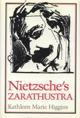

<body bgcolor="#FFFFFF" text="#000000" link="#0000FF" vlink="#CC0000" alink="#CC0000"><center><hr width="350" size="1" align="center" noshade>Provides interpretive guidelines for making sense of <I>Thus Spoke Zarathustra</I><hr width="350" size="1" align="center" noshade><p><a href="https://cdcshoppingcart.uchicago.edu/Cart/ChicagoBook.aspx?ISBN=9780877224822&&PRESS=temple" target="_top">Buy this book!</a> | <a href="https://cdcshoppingcart.uchicago.edu/Cart/Cart.aspx?PRESS=temple" target="_top">View Cart</a> | <a href="https://cdcshoppingcart.uchicago.edu/Cart/Cart.aspx?PRESS=temple" target="_top">Check Out</a></p><p></p></center><!--none//--><h1>Nietzsche's <I>Zarathustra</I></h1>
<h3>Kathleen Marie Higgins</h3>
<P>cloth 0-87722-482-X $39.95, Sep 87, <FONT COLOR=#990033>Out of Print</FONT>
<br>paper 0-87722-687-3 $19.95, Feb 90, <FONT COLOR=#990033>Out of Print</FONT>
<BR> 328 pp
145&nbsp;tables
</P><BLOCKQUOTE><I>"Nietzsche scholars will want to read this clearly written and illuminating book."</I>
<br>&#151<b><I>Library Journal</I></b><I></I></BLOCKQUOTE>
<p>Although Nietzsche viewed <I>Thus Spoke Zarathustra</I> as his most important achievement, scholars have tended to view it as a fictionalized statement of thoughts Nietzsche develops elsewhere. Kathleen Higgins addresses <I>Zarathustra</I> on its own terms as an interdisciplinary work whose literary format is fundamental to the kind of philosophical points it is making. Concern with the significance of this work has been relatively rare in recent scholarship, largely because its literary form demands an approach that is alien to that which dominates contemporary American philosophy.
<p>Higgins presents a unique view of the often under-rated Part IV of <I>Zarathustra</I> by identifying Nietzsche’s extensive allusions to <I>The Golden Ass</I>, a Menippean satire by Apuleius. At a time of renewed interest in Nietzsche among philosophers and literary scholars, this book provides interpretive guidelines for making sense of <I>Thus Spoke Zarathustra</I>, which, among the works of a subtle and challenging writer, is generally considered to be the most perplexing.
<BR>&nbsp;<h2>Reviews</h2>
<p><I>"This elegantly produced book is a well-written, perceptive, deeply sympathetic study of Nietzsche’s masterpiece an original, provocative work. It will need to be read by anyone with a serious interest in Nietzsche."</I>
<br>&#151<b>Julian Young</b>, <I>Australian Journal of Philosophy</I>
<p><I>"</I>Thus Spoke Zarathustra<I> is Nietzsche’s most popular and yet least comprehensible book. Many have left the matter there, deriding both the author and his public. Kathleen Higgins refuses to take this easy path. She reveals the complexities underlying the work’s apparent lack of organization and argues that these complexities, far from being gratuitous, are telling and significant. Higgins has written an engaging book, which will prove indispensable to Nietzsche’s many readers."</I>
<br>&#151<b>Alexander Nehamas</b>, University of Pennsylvania
<p><I>"This book contains the kind of original insights into </I>Zarathustra<I> that can only be gleaned from a very close, intuitive reading. Higgins is sensitive and sympathetic to the religious or spiritual dimension of Nietzsche’s thought, which most writers on Nietzsche ignore, neglect, deny, or don’t even see."</I>
<br>&#151<b>Joan Stambaugh</b>, Hunter College
<p><I>"Nietzsche thought that philosophy chairs would be offered for the best interpretations of </I>Zarathustra<I> one hundred years after its publication. To date only three such full-scale studies have appeared in English&#151Alderman’s, Lampert’s, and Higgins’s&#151and Professor Higgins’s seems to me the most original, scholarly, and philosophically penetrating. [It] will alter our understanding of this masterpiece in a permanent way."</I>
<br>&#151<b>Bernd Magnus</b>
<BR>&nbsp;<H2>About the Author(s)</H2>
<P><b>Kathleen Marie Higgins</b> is Associate Professor of Philosophy at the University of Texas, Austin.</P>
<BR><H2>Subject Categories</H2>
<p><A HREF="/tempress/philosophy.html" TARGET="_top">Philosophy and Ethics</a>
<BR><A HREF="/tempress/literature.html" TARGET="_top">Literature and Drama</a>
</p>
<p align="center"><a href="https://cdcshoppingcart.uchicago.edu/Cart/ChicagoBook.aspx?ISBN=9780877224822&&PRESS=temple" target="_top">Buy this book!</a> | <a href="https://cdcshoppingcart.uchicago.edu/Cart/Cart.aspx?PRESS=temple" target="_top">View Cart</a> | <a href="https://cdcshoppingcart.uchicago.edu/Cart/Cart.aspx?PRESS=temple" target="_top">Check Out</a></p><p><font face="Arial" size="1"><a href="copyright.html" onMouseOver="window.status='Web Copyright Policy';return true;" onMouseOut="window.status=''" title="Web Copyright Policy">&copy;</a> 2015 <a href="http://www.temple.edu" target="new" onMouseOver="window.status='Link to Temple University home page';return true;" onMouseOut="window.status=''" title="Link to Temple University home page">Temple University</a>. All Rights Reserved. http://www.temple.edu/tempress/titles/476_reg.html</font></p>